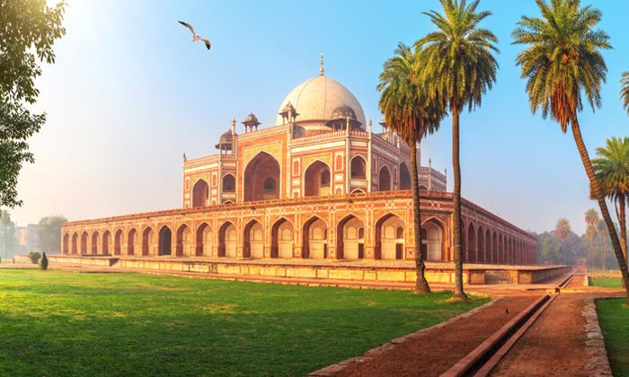

ANCIENT HISTORY COMES ALIVE HERE
India is a treasure trove of heritage and culture and is one of the few countries in the world where the past remains inextricably linked to the present. The wealth of heritage spanning the ages, in terms of personalities, monuments, architecture, arts & crafts, history and culture cannot be measured. And yet, there is a dearth of information about our heritage available to the lay person. Our company is striving hard to fulfill this need.
Owing to its rich heritage and culture, India is probably the only country in the world where the past remains inextricably linked to our present. We at Heritage India advocate value, respect, and a sense of pride and belonging with space where this history was created. Our work manifests authenticity, quality, pride, responsibility, and fun.
The rich heritage of India, one of the world’s oldest civilizations, is an all-embracing confluence of religions, traditions and customs. The highlights of Indian heritage lie in the treasure of its art, architecture, classical dance, music, flora and fauna, and the innate secular philosophy of its people. A visit to the heritage sites is like a walk through history, changing lanes with every dynasty that ruled Indian soils. The finesse of Indian handiwork, the richness of silk and cotton textiles, the ethnicity of jewellery, everything has come down as a heritage from ancient times and is being kept alive generation after generation. Even food in India is a legacy and part of Indian heritage, differing in look and taste in every state of India.
Heritage means what we inherit from our ancestors and from our past. India is a land of varied cultures and traditions. People from numerous castes, religions, and creeds reside in our country. Each ethnic group in our country has its own tale of origin and its set of unique traditions and culture. They have all contributed to the making of Indian history and culture. Nature has made India into a distinct geographical entity.
Indian heritage and culture are vast and vivid because of the large number of religious groups residing in our country. Every community has its own set of customs and traditions which it passes on to its younger generation.
However, some of our customs and traditions remain the same throughout IndiaOur traditions teach us to inculcate good habits and make us a good human being. Our cultural heritage is thus a beautiful gift from our older generation that will help us become a better human being and build a harmonious society.
The elders should take responsibility to invoke love for the Indian heritage in the younger generations. This must be done from the very beginning only then we can preserve our rich heritage. It is the duty of the elders to invoke love for the Indian heritage in the younger generations. This must be done from the very beginning only then we can preserve our rich heritage. Schools must teach students about Indian heritage and how it has survived for centuries. They must also share the importance of preserving it. This would help in invoking a feeling of pride in them and they would be inspired to continue the tradition and also pass it on to the new generation. This needs a collective effort by the teachers as well as parents.